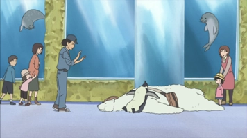
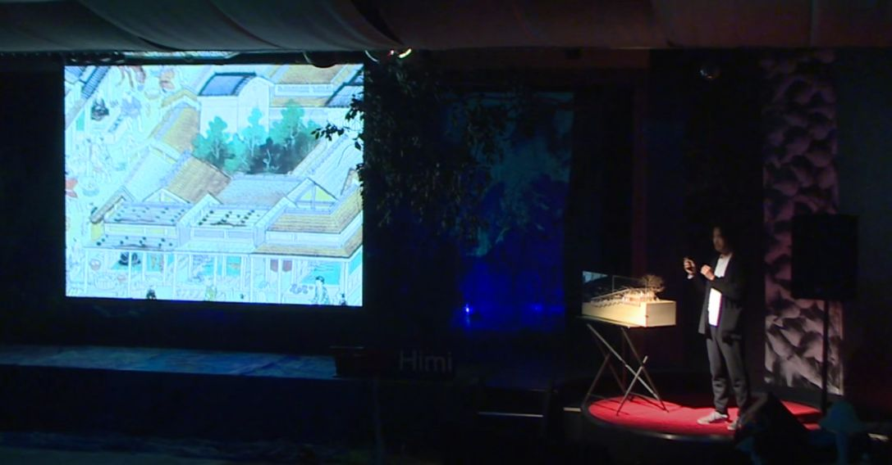
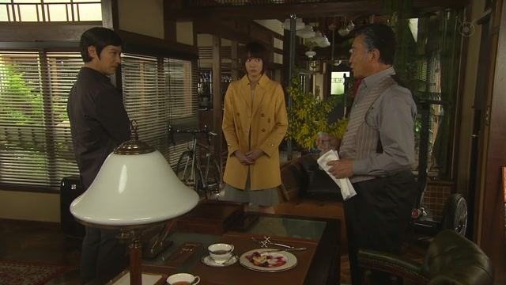
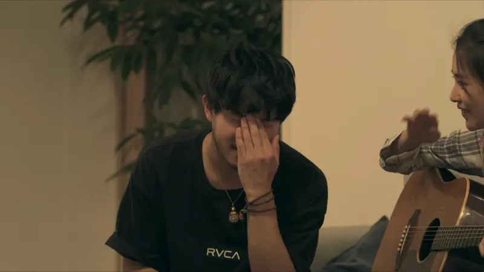
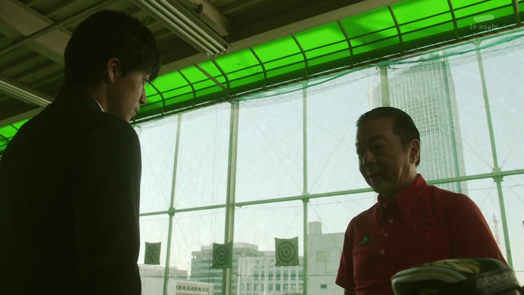
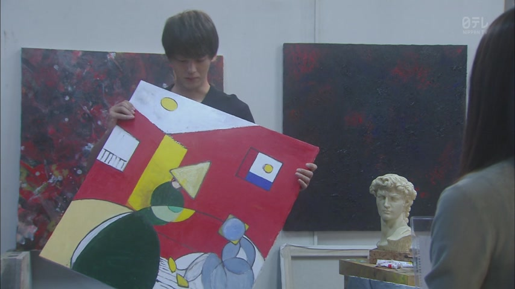

これ・それ・あれ

Shirokuma Cafe · Season 1, Episode 3
え？これ絨毯ですよ？
"Huh? This is a rug, you know?"
これ, それ and あれ mean "this thing" or "that thing". Which one you pick depends on where the thing is: これ is near me, それ is near you, あれ is far from both of us.
On this card, the speaker is standing right next to the "rug", so it's これ. Someone further away would point at it with それ or あれ.
They work like normal nouns, so particles go right after: これは, それが, あれを. In speech the は often drops, like here.

Examples
At the konbini, you hold up an onigiri you don't recognise.
これは何ですか？
"What's this?"
It's in your hand: これ.
A friend shows you their new camera.
それ、いくらだった？
"How much was that?"
It's in their hand: それ.
On the beach in Chigasaki, you spot an island far out at sea.
あれは江の島？
"Is that Enoshima?"
Far from both of you: あれ.
A friend says they're moving to Kyoto.
それはいいね。
"That's great."
それ also points at something the other person just said.
With and without
これは何ですか？
Points at the thing. Clear even if there are several things around.
何ですか？
When you're already holding it up, Japanese often just leaves これ out.
Sentence mining

YouTube · video
これ、ほんの気持ちです。
"This is just a small token of thanks."
Handing over a gift: it's still in your hands, so これ. The は is dropped here.

YouTube · TEDxHimi
これは江戸時代の錦絵です。
"This is an Edo-period woodblock print."
Showing a slide: what you're presenting is yours, so これ.

Legal High · Episode 2
あれは 冷凍食品です。
"That's frozen food."
あれ also points at something you both know about but that isn't here.
Weakest Beast · Episode 4
これは 意地悪です
"This is just being mean."
これ can point at what's happening right now, not only at a thing.

New Atashin'chi · Episode 1
これは究極の兵器かもねえ。
"This might be the ultimate weapon."
It's in the speaker's hands, so これ. 究極の兵器 ("the ultimate weapon") + かもねえ ("might be").

Terrace House
確かに、それは規格外の短さだな。
"True, that's unusually short."
Talking about the other person's pinky, so それ.

Border · Episode 4
それは よかった
"That's good."
それ for news the other person just told you.

Overprotected Kahoko · Episode 4
じゃあ これは？
"Then what about this?"
He's holding the painting up himself, so これ.